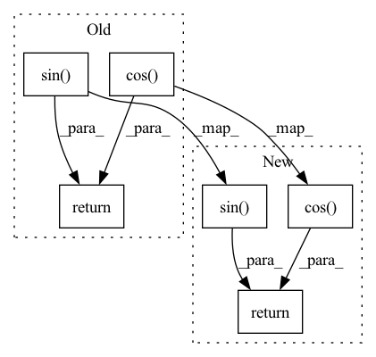

Pattern ID :784

Before Change
emb = math.log(10000) / (half_dim - 1)
emb = torch.exp(torch.arange(half_dim, device=device) * -emb)
emb = x[:, None] * emb[None, :]
emb = torch.cat((emb.sin(), emb.cos()), dim=-1)
return emb
class Mish(nn.Module):
After Change
def forward(self, input):
shape = input.shape
sinusoid_in = torch.ger(input.view(-1).float(), self.inv_freq)
pos_emb = torch.cat([sinusoid_in.sin(), sinusoid_in.cos()], dim=-1)
pos_emb = pos_emb.view(*shape, self.dim)
return pos_emb
class Swish(nn.Module):
In pattern: SUPERPATTERN
Frequency: 3
Non-data size: 6
Instances
Fragment ID: 2863503
Project Name: janspiry/image-super-resolution-via-iterative-refinement
Commit Name: 519d366759ea639a68262c20661fa8af7e85cfc6
Time: 2021-07-30
Author: jiangliangwei@tetras.com
File Name: model/unet.py
M Class Name: SinusoidalPosEmb
N Class Name: TimeEmbedding
M Method Name: forward(2)
N Method Name: forward(2)
M Parent Class: nn.Module
N Parent Class: nn.Module
M File Name: model/unet.py
N File Name: model/unet.py
M Start Line: 37
M End Line: 42
N Start Line: 32
N End Line: 36
'>
Before Change
emb = math.log(10000) / (half_dim - 1)
emb = torch.exp(torch.arange(half_dim, device=device) * -emb)
emb = x[:, None] * emb[None, :]
emb = torch.cat((emb.sin(), emb.cos()), dim=-1)
return emb
class Mish(nn.Module):
After Change
def forward(self, input):
shape = input.shape
sinusoid_in = torch.ger(input.view(-1).float(), self.inv_freq)
pos_emb = torch.cat([sinusoid_in.sin(), sinusoid_in.cos()], dim=-1)
pos_emb = pos_emb.view(*shape, self.dim)
return pos_emb
class Swish(nn.Module):
'>
Fragment ID: 2863507
Project Name: janspiry/image-super-resolution-via-iterative-refinement
Commit Name: a843610e321ec7e1898e97dd495f8991182b8b87
Time: 2021-07-30
Author: lw_jiang@foxmail.com
File Name: model/unet.py
M Class Name: SinusoidalPosEmb
N Class Name: TimeEmbedding
M Method Name: forward(2)
N Method Name: forward(2)
M Parent Class: nn.Module
N Parent Class: nn.Module
M File Name: model/unet.py
N File Name: model/unet.py
M Start Line: 37
M End Line: 42
N Start Line: 32
N End Line: 36
'>
Before Change
def forward(self, input: torch.Tensor) -> torch.Tensor:
projected = F.linear(input, self.weight)
return torch.cos(projected + self.bias) * torch.sin(projected)
After Change
def forward(self, input: torch.Tensor) -> torch.Tensor:
projected = F.linear(input, self.weight)
output = torch.cos(projected + self.bias) * torch.sin(projected)
return output.as_subclass(MAP)
'>
Fragment ID: 2863506
Project Name: hyperdimensional-computing/torchhd
Commit Name: b8f0460fe826ce47ff268cb9c2b15048f5d188d1
Time: 2022-11-09
Author: mikeheddes@gmail.com
File Name: torchhd/embeddings.py
M Class Name: Sinusoid
N Class Name: Sinusoid
M Method Name: forward(2)
N Method Name: forward(2)
M Parent Class: nn.Module
N Parent Class: nn.Module
M File Name: torchhd/embeddings.py
N File Name: torchhd/embeddings.py
M Start Line: 345
M End Line: 345
N Start Line: 353
N End Line: 354